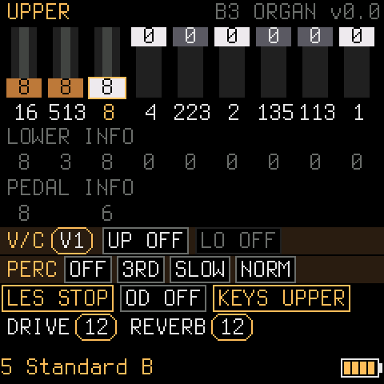
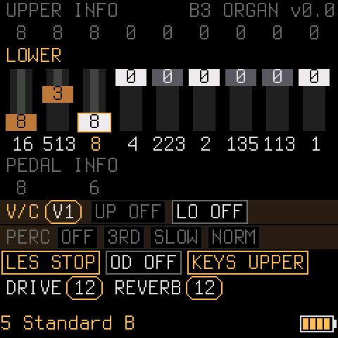
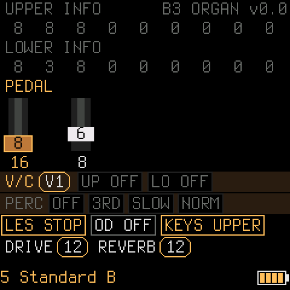
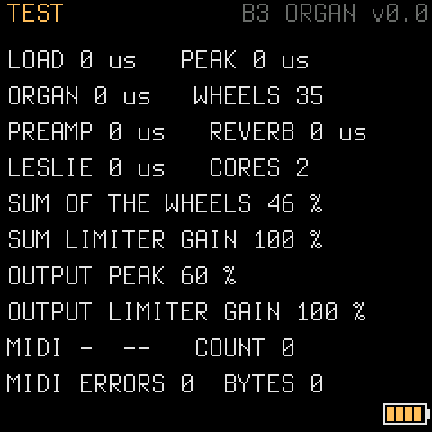

Install
From this page, over USB, in Chrome or Edge. Back to the official firmware or to another one at any time.
- Connect the FM-1 to the computer with a USB data cable, directly (no hub), and switch it on.
- Close other programs and browser tabs that use MIDI.
- Press Install and allow MIDI (with SysEx) when the browser asks.
- Wait until it says Done: the FM-1 restarts with the logo. Do not unplug the cable while it writes.
Details
Custom firmware, no warranty: use it at your own risk. Your own programs (112 to 127) stay through an update of B3 ORGAN; before you install another firmware, save a backup with the editor.
Other ways: the Firmware Hub, tools/fm1_install.py from the repository, or M-VAVE's own updater M-UPGRADE with the .fwsc from the Releases.
If an install is cut off, the FM-1 stays in update mode: press Install again and it finishes. USB rescue: hold OCT− while switching on.
Back to the official firmware
Download the official FM-1 firmware (V16 or V15) from M-VAVE and choose its FM-1.fwsc, unchanged. It is checked here in the browser and sent nowhere.
The screens
KNOB 1 turns the pages. Each manual's page shows its drawbars as bars and the other two manuals' values as numbers; the switches, the knob values, the program and the battery are on every page.
0Start and screen saver
- After switching on, and again after a minute without a knob, a button or a key. While an install writes, it shows the progress under the logo.
- The first knob or button only brings back page 1 (it changes nothing); a key plays at once.

1Upper manual
- SELECT chooses a drawbar (16' … 1'), ALGORITHM sets it 0 to 8.
- FX: vibrato / chorus on the upper manual. ENV ARP SEQ PLAY: percussion on, 2nd / 3rd, fast / slow, soft / normal.
- Below:
V/Ctype (KNOB 2), Leslie, overdrive, which manual the keys play,DRIVE(KNOB 3),REVERB(KNOB 4), the program.

2Lower manual
- The same for the lower manual (MIDI channel 2, or the FM-1's keys after REC).
- FX: vibrato / chorus on the lower manual. The percussion belongs to the upper manual only.

3Pedal
- Two drawbars, 16' and 8' (MIDI channel 3).
- Right of them the equalizer: SELECT goes on past the 8' to
BASS,MID,TREB, ALGORITHM sets each −9 to +9 dB in 0.5 dB steps. The frequencies are in the editor.

4Test values
- The load of the audio block in µs (it must stay under 5800 µs) and of each stage (organ, preamp, reverb, Leslie);
CORES 2when both work. - The sum of the wheels and the output, each with its limiter's gain: 100 % means the limiter does nothing.
- The last MIDI message, how many came, and errors.
The controls
Everything also goes over MIDI (USB or the TRS jack) with setBfree's controller numbers: the list is in README_ORGAN.md.
| Control | What it does |
|---|---|
| Keys, OCT− / OCT+ | Play the manual REC chose (F3 to G5), shift the octave |
| REC | The FM-1's keys play the upper manual, the lower manual or the pedal |
| KNOB 1 | The page: 1 upper, 2 lower, 3 pedal, 4 test values |
| SELECT / ALGORITHM | Choose a drawbar / set it 0 to 8, on the page's manual; on the pedal page also the equalizer's bass, middle, treble |
| PRESETS | setBfree's registrations (5 Standard B, 11 Brian Auger 3rd, 15 Booker T, 104 Jimmy Smith …), then your own 112 to 127 |
| KNOB 2 | Vibrato / chorus type V1, C1, V2, C2, V3, C3 |
| KNOB 3 | Overdrive drive 0 to 20 (12 sounds like setBfree) |
| KNOB 4 | Reverb 0 to 127, in doubling steps |
| FX | Vibrato / chorus on or off for the page's manual |
| LFO | Leslie: stop, slow, fast |
| SEL | Overdrive on / off |
| ENV, ARP, SEQ, PLAY | Percussion on / off, 2nd / 3rd, fast / slow, soft / normal (page 1) |
| EDIT, SAVE | Free: the settings are saved by themselves when nothing sounds |
More
Editor
Drawbars of all three manuals, presets, your own programs 112 to 127, overdrive character, Leslie speeds, tuning and key click, the equalizer, and a backup to a file. Open it.
Play in the browser
The same organ engine in the browser, with the computer keyboard or a MIDI keyboard: a first impression. Play.
setBfree
The tonewheels, the preamp, the vibrato scanner and the Leslie follow setBfree's model and data, in integers and measured against it.
Releases
What changed in each version: the release notes. Please report what sounds different from setBfree.